<!DOCTYPE html>
<html lang="en">
<head>
<meta charset="utf-8"/>
<style>body{background-color:white;}</style>
<link href="index_files/htmltools-fill-0.5.8.1/fill.css" rel="stylesheet" />
<script src="index_files/htmlwidgets-1.6.4/htmlwidgets.js"></script>
<script src="index_files/jquery-3.6.0/jquery-3.6.0.min.js"></script>
<link href="index_files/leaflet-1.3.1/leaflet.css" rel="stylesheet" />
<script src="index_files/leaflet-1.3.1/leaflet.js"></script>
<link href="index_files/leafletfix-1.0.0/leafletfix.css" rel="stylesheet" />
<script src="index_files/proj4-2.6.2/proj4.min.js"></script>
<script src="index_files/Proj4Leaflet-1.0.1/proj4leaflet.js"></script>
<link href="index_files/rstudio_leaflet-1.3.1/rstudio_leaflet.css" rel="stylesheet" />
<script src="index_files/leaflet-binding-2.2.3/leaflet.js"></script>
  <title>leaflet</title>
</head>
<body>
<div id="htmlwidget_container">
  <div class="leaflet html-widget html-fill-item" id="htmlwidget-5a67dbfd1a606472f065" style="width:100%;height:400px;"></div>
</div>
<script type="application/json" data-for="htmlwidget-5a67dbfd1a606472f065">{"x":{"options":{"crs":{"crsClass":"L.CRS.EPSG3857","code":null,"proj4def":null,"projectedBounds":null,"options":{}}},"calls":[{"method":"addTiles","args":["https://{s}.tile.openstreetmap.org/{z}/{x}/{y}.png",null,null,{"minZoom":0,"maxZoom":18,"tileSize":256,"subdomains":"abc","errorTileUrl":"","tms":false,"noWrap":false,"zoomOffset":0,"zoomReverse":false,"opacity":1,"zIndex":1,"detectRetina":false,"attribution":"&copy; <a href=\"https://openstreetmap.org/copyright/\">OpenStreetMap<\/a>,  <a href=\"https://opendatacommons.org/licenses/odbl/\">ODbL<\/a>"}]},{"method":"addMarkers","args":[[54.26834299759393,54.23365722659941,54.24811420870458,54.0698279239728,53.67177809477008,53.38665773056603,53.62412680245532,53.60793279622239,53.48278786716651,53.00750082818671,53.06095601483968,53.25575217308486,52.80155811947041,52.60057268710673,52.08454863888158,50.80763177930723,50.67272558310223,50.67352962040663,50.51415247315134,50.43474041979727,50.32684294605009,50.10683749393107,50.02137822874366,50.0401831160225,49.99721997152151,49.9378647075198,49.87805455662537,49.78482911590521,49.7670948442381,49.72934724587991,49.69377809782361,49.70101613203403,49.48717474147937,49.44154100070487,50.47752357105824,50.16238524425201,50.20032131658741,50.08486702397558,49.87692863949221,49.73917508429034,49.62697474456393,49.56768896616724,49.33867659291251,53.2732550765534,53.30905644738536,53.28495317659196,53.22630200787432,53.2204114149168,53.17839275641591,53.20138788091833,53.08453520422481,53.03490294747007,52.94904279393461,52.91598495218451,52.74472188357599,52.65384222451486,51.72695470177987,51.65740410097889,51.59982143367608,51.60918617549069,51.55168167567528,51.57299504829997,51.56253208434305,51.52026026126626,51.53007252641096,51.52113559712797,51.49836577140422,51.46535746861807,51.45844951771893,51.43584180925844,51.38796401505569,51.30153401933536,51.2795837936436,51.31604956968496,51.08927676904307,51.11020779967754,51.07595877587288,50.9854012880746,50.88640593232557,50.7619414629491,50.6632699308711,50.57119513469922,50.47314055853288,50.4835038481682,50.44820847929836,50.42773860488515,50.29914967340164,50.26087423544355,50.31624889296867,50.29803982410102,50.25948274986391,50.23583816918804,50.16088981624804,50.06470929188914,49.97255119252454,49.9212675274573,52.58831385683862,52.51036078451959,52.41467267891464,52.10348760360448,49.93170979466084,49.91326820944845,54.09279595995071,53.42206906046287,53.4297576439626,53.84135299273543,53.85850566165206,50.61130098467174,52.39802747968564,52.72879774019336,51.89848391504427,52.15080388354661,52.77214014621537,52.61231243730343,52.85108992678969,53.15039470294004,51.5761758782457,51.63166747651282,51.61823796606392,51.61403757256075,54.06400982939684,53.90111069609692,54.44205302418116,54.469943165986,54.66234596238143,53.57258490919894,50.29231641092309,50.44287426511552,50.48109633317669,50.41967901990769,50.55262170263781,50.48504357549307,50.94781353121368,50.91573865664056,50.78209067936501,50.95280430915735,50.94432654625057,51.20348298263577,50.98712690100729,53.52811906698926],[21.00865676786447,21.08687477394979,22.0269852343805,23.11695824770319,23.11619470140301,21.34038122777288,21.80606920925961,22.9285954230574,22.63895010047565,18.60581820920438,18.92910170213666,19.40033801569779,18.09168289409626,18.03349858663634,18.82421449457436,21.86440437728023,21.7468932982299,21.93056331406879,20.52040718290261,21.28444590072805,21.0773462968505,21.48660906286805,22.70260929543158,19.21794202541073,20.94911210072678,22.91689684245007,21.81801398359923,22.76738253160049,22.82299402858565,21.45985329077258,21.77474361989512,21.2168967830577,20.04628131111302,20.42918074776363,22.47363631159157,22.54696130069579,20.68198968100039,22.48672728636216,19.51076625562433,19.60916856473853,20.68675007346988,20.66011034159238,20.89202543838853,22.4594421476295,21.10750267009167,21.86672159189228,21.86411983822997,22.54103603320458,23.02585316889165,22.40867216028209,21.56420130077908,21.15352388349882,22.95495251916703,23.52236644904843,22.81725392917579,19.54122917132607,18.10745114191142,20.95173783608445,18.7420382227196,20.57318043204359,23.56642622062891,22.00126660613513,21.82597963599124,20.56244537089837,19.94287817015219,23.52257797156885,22.64363583879019,18.94262548787442,18.98455279143226,18.97445109658376,18.76199281131058,22.68857890838136,18.13171361326729,18.15496211540023,19.87514663169474,18.8732349789449,21.01831372065947,23.17638919765519,21.8335008954729,17.67487779808765,18.34264530523824,18.6244786798726,19.00027121800893,19.2538021744683,17.89718313970081,19.1775086040465,19.39890636335543,19.13987243675006,17.3799875761189,18.66783498075732,19.13638168688986,19.16063525417606,19.2400339850988,19.19345064519944,19.12174550747802,18.3275163387727,21.45308938380004,21.67946259374623,22.56089589329669,23.46670683225167,18.98518610963994,18.98645586951465,18.8040618790253,19.58939740523963,19.69055650863304,18.09230938902212,18.76011940249552,22.9666969191308,16.94114462219764,15.24099786312278,17.95297717862405,16.53168787104924,17.08451020384475,16.58151950485695,15.83726671000829,16.74392681155966,17.6711093552517,16.46238315823606,15.31570247707342,15.29016385701207,15.26355749704957,16.06422510965633,16.60588051159142,17.03111548801163,17.21270294399432,17.90286277452135,16.64796105670325,16.65932222678786,17.34144622049982,16.60421434054232,16.43559626877725,16.57119195264076,17.29241511444451,16.58386921205577,16.58384982273652,16.49256376617367,15.6002711090298,15.39578915640703,15.38373479624305,15.81011694241865],{"iconUrl":{"data":"data:image/png;base64,iVBORw0KGgoAAAANSUhEUgAAAAEAAAABCAQAAAC1HAwCAAAAC0lEQVR4nGP6zwAAAgcBApocMXEAAAAASUVORK5CYII=","index":0},"iconWidth":1,"iconHeight":1},null,null,{"interactive":true,"draggable":false,"keyboard":true,"title":"","alt":"","zIndexOffset":0,"opacity":1,"riseOnHover":false,"riseOffset":250},null,null,null,null,"<div class='triangle-down'><\/div>",{"interactive":false,"permanent":true,"direction":"center","opacity":1,"offset":[0,0],"textsize":"10px","textOnly":true,"className":"","sticky":true},null]},{"method":"addCircleMarkers","args":[[54.26834299759393,54.23365722659941,54.24811420870458,54.0698279239728,53.67177809477008,53.38665773056603,53.62412680245532,53.60793279622239,53.48278786716651,53.00750082818671,53.06095601483968,53.25575217308486,52.80155811947041,52.60057268710673,52.08454863888158,50.80763177930723,50.67272558310223,50.67352962040663,50.51415247315134,50.43474041979727,50.32684294605009,50.10683749393107,50.02137822874366,50.0401831160225,49.99721997152151,49.9378647075198,49.87805455662537,49.78482911590521,49.7670948442381,49.72934724587991,49.69377809782361,49.70101613203403,49.48717474147937,49.44154100070487,50.47752357105824,50.16238524425201,50.20032131658741,50.08486702397558,49.87692863949221,49.73917508429034,49.62697474456393,49.56768896616724,49.33867659291251,53.2732550765534,53.30905644738536,53.28495317659196,53.22630200787432,53.2204114149168,53.17839275641591,53.20138788091833,53.08453520422481,53.03490294747007,52.94904279393461,52.91598495218451,52.74472188357599,52.65384222451486,51.72695470177987,51.65740410097889,51.59982143367608,51.60918617549069,51.55168167567528,51.57299504829997,51.56253208434305,51.52026026126626,51.53007252641096,51.52113559712797,51.49836577140422,51.46535746861807,51.45844951771893,51.43584180925844,51.38796401505569,51.30153401933536,51.2795837936436,51.31604956968496,51.08927676904307,51.11020779967754,51.07595877587288,50.9854012880746,50.88640593232557,50.7619414629491,50.6632699308711,50.57119513469922,50.47314055853288,50.4835038481682,50.44820847929836,50.42773860488515,50.29914967340164,50.26087423544355,50.31624889296867,50.29803982410102,50.25948274986391,50.23583816918804,50.16088981624804,50.06470929188914,49.97255119252454,49.9212675274573,52.58831385683862,52.51036078451959,52.41467267891464,52.10348760360448,49.93170979466084,49.91326820944845,54.09279595995071,53.42206906046287,53.4297576439626,53.84135299273543,53.85850566165206,50.61130098467174,52.39802747968564,52.72879774019336,51.89848391504427,52.15080388354661,52.77214014621537,52.61231243730343,52.85108992678969,53.15039470294004,51.5761758782457,51.63166747651282,51.61823796606392,51.61403757256075,54.06400982939684,53.90111069609692,54.44205302418116,54.469943165986,54.66234596238143,53.57258490919894,50.29231641092309,50.44287426511552,50.48109633317669,50.41967901990769,50.55262170263781,50.48504357549307,50.94781353121368,50.91573865664056,50.78209067936501,50.95280430915735,50.94432654625057,51.20348298263577,50.98712690100729,53.52811906698926],[21.00865676786447,21.08687477394979,22.0269852343805,23.11695824770319,23.11619470140301,21.34038122777288,21.80606920925961,22.9285954230574,22.63895010047565,18.60581820920438,18.92910170213666,19.40033801569779,18.09168289409626,18.03349858663634,18.82421449457436,21.86440437728023,21.7468932982299,21.93056331406879,20.52040718290261,21.28444590072805,21.0773462968505,21.48660906286805,22.70260929543158,19.21794202541073,20.94911210072678,22.91689684245007,21.81801398359923,22.76738253160049,22.82299402858565,21.45985329077258,21.77474361989512,21.2168967830577,20.04628131111302,20.42918074776363,22.47363631159157,22.54696130069579,20.68198968100039,22.48672728636216,19.51076625562433,19.60916856473853,20.68675007346988,20.66011034159238,20.89202543838853,22.4594421476295,21.10750267009167,21.86672159189228,21.86411983822997,22.54103603320458,23.02585316889165,22.40867216028209,21.56420130077908,21.15352388349882,22.95495251916703,23.52236644904843,22.81725392917579,19.54122917132607,18.10745114191142,20.95173783608445,18.7420382227196,20.57318043204359,23.56642622062891,22.00126660613513,21.82597963599124,20.56244537089837,19.94287817015219,23.52257797156885,22.64363583879019,18.94262548787442,18.98455279143226,18.97445109658376,18.76199281131058,22.68857890838136,18.13171361326729,18.15496211540023,19.87514663169474,18.8732349789449,21.01831372065947,23.17638919765519,21.8335008954729,17.67487779808765,18.34264530523824,18.6244786798726,19.00027121800893,19.2538021744683,17.89718313970081,19.1775086040465,19.39890636335543,19.13987243675006,17.3799875761189,18.66783498075732,19.13638168688986,19.16063525417606,19.2400339850988,19.19345064519944,19.12174550747802,18.3275163387727,21.45308938380004,21.67946259374623,22.56089589329669,23.46670683225167,18.98518610963994,18.98645586951465,18.8040618790253,19.58939740523963,19.69055650863304,18.09230938902212,18.76011940249552,22.9666969191308,16.94114462219764,15.24099786312278,17.95297717862405,16.53168787104924,17.08451020384475,16.58151950485695,15.83726671000829,16.74392681155966,17.6711093552517,16.46238315823606,15.31570247707342,15.29016385701207,15.26355749704957,16.06422510965633,16.60588051159142,17.03111548801163,17.21270294399432,17.90286277452135,16.64796105670325,16.65932222678786,17.34144622049982,16.60421434054232,16.43559626877725,16.57119195264076,17.29241511444451,16.58386921205577,16.58384982273652,16.49256376617367,15.6002711090298,15.39578915640703,15.38373479624305,15.81011694241865],6,null,null,{"interactive":true,"className":"","stroke":true,"color":"#03F","weight":5,"opacity":0,"fill":true,"fillColor":"#03F","fillOpacity":0},null,null,["<div class='popup-content'><b>Station:<\/b> SĘPOPOL<br><b>Station number:<\/b> 154210010<br><b>River:<\/b> ŁYNA<br><br>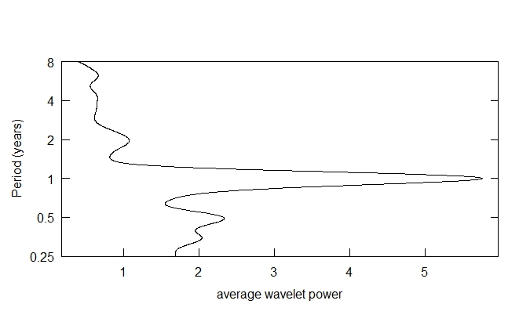<br><span style='font-size:11px; color:#666;'>Source: Chauhan (2025), <a href='https://doi.org/10.1080/02626667.2025.2513479' target='_blank'>Hydrological Sciences Journal<\/a><\/span><\/div>","<div class='popup-content'><b>Station:<\/b> PROSNA<br><b>Station number:<\/b> 154210020<br><b>River:<\/b> GUBER<br><br><br><span style='font-size:11px; color:#666;'>Source: Chauhan (2025), <a href='https://doi.org/10.1080/02626667.2025.2513479' target='_blank'>Hydrological Sciences Journal<\/a><\/span><\/div>","<div class='popup-content'><b>Station:<\/b> BANIE MAZURSKIE<br><b>Station number:<\/b> 154220010<br><b>River:<\/b> GOŁDAPA<br><br><br><span style='font-size:11px; color:#666;'>Source: Chauhan (2025), <a href='https://doi.org/10.1080/02626667.2025.2513479' target='_blank'>Hydrological Sciences Journal<\/a><\/span><\/div>","<div class='popup-content'><b>Station:<\/b> CZERWONY FOLWARK<br><b>Station number:<\/b> 154230030<br><b>River:<\/b> CZARNA HAŃCZA<br><br>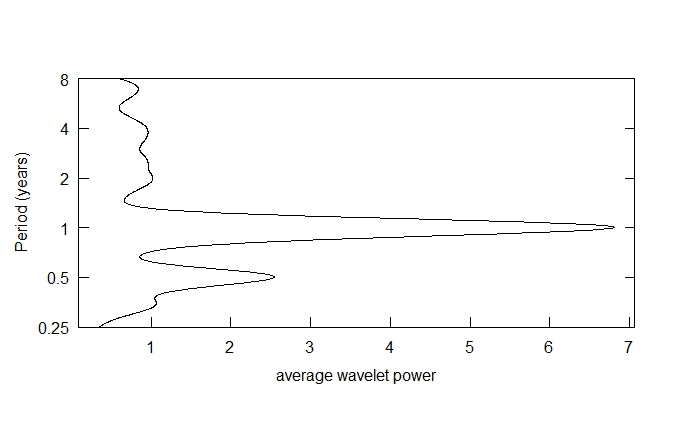<br><span style='font-size:11px; color:#666;'>Source: Chauhan (2025), <a href='https://doi.org/10.1080/02626667.2025.2513479' target='_blank'>Hydrological Sciences Journal<\/a><\/span><\/div>","<div class='popup-content'><b>Station:<\/b> SZTABIN<br><b>Station number:<\/b> 153230070<br><b>River:<\/b> BIEBRZA<br><br>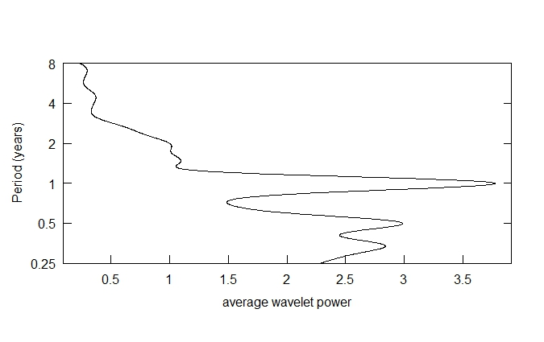<br><span style='font-size:11px; color:#666;'>Source: Chauhan (2025), <a href='https://doi.org/10.1080/02626667.2025.2513479' target='_blank'>Hydrological Sciences Journal<\/a><\/span><\/div>","<div class='popup-content'><b>Station:<\/b> MYSZYNIEC<br><b>Station number:<\/b> 153210040<br><b>River:<\/b> ROZOGA<br><br><br><span style='font-size:11px; color:#666;'>Source: Chauhan (2025), <a href='https://doi.org/10.1080/02626667.2025.2513479' target='_blank'>Hydrological Sciences Journal<\/a><\/span><\/div>","<div class='popup-content'><b>Station:<\/b> PISZ<br><b>Station number:<\/b> 153210170<br><b>River:<\/b> PISA<br><br><br><span style='font-size:11px; color:#666;'>Source: Chauhan (2025), <a href='https://doi.org/10.1080/02626667.2025.2513479' target='_blank'>Hydrological Sciences Journal<\/a><\/span><\/div>","<div class='popup-content'><b>Station:<\/b> DĘBOWO<br><b>Station number:<\/b> 153220260<br><b>River:<\/b> BIEBRZA<br><br>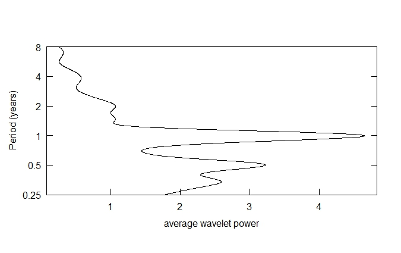<br><span style='font-size:11px; color:#666;'>Source: Chauhan (2025), <a href='https://doi.org/10.1080/02626667.2025.2513479' target='_blank'>Hydrological Sciences Journal<\/a><\/span><\/div>","<div class='popup-content'><b>Station:<\/b> OSOWIEC<br><b>Station number:<\/b> 153220170<br><b>River:<\/b> BIEBRZA<br><br><br><span style='font-size:11px; color:#666;'>Source: Chauhan (2025), <a href='https://doi.org/10.1080/02626667.2025.2513479' target='_blank'>Hydrological Sciences Journal<\/a><\/span><\/div>","<div class='popup-content'><b>Station:<\/b> TORUŃ<br><b>Station number:<\/b> 153180090<br><b>River:<\/b> WISŁA<br><br><br><span style='font-size:11px; color:#666;'>Source: Chauhan (2025), <a href='https://doi.org/10.1080/02626667.2025.2513479' target='_blank'>Hydrological Sciences Journal<\/a><\/span><\/div>","<div class='popup-content'><b>Station:<\/b> ELGISZEWO<br><b>Station number:<\/b> 153180140<br><b>River:<\/b> DRWĘCA<br><br><br><span style='font-size:11px; color:#666;'>Source: Chauhan (2025), <a href='https://doi.org/10.1080/02626667.2025.2513479' target='_blank'>Hydrological Sciences Journal<\/a><\/span><\/div>","<div class='popup-content'><b>Station:<\/b> BRODNICA<br><b>Station number:<\/b> 153190050<br><b>River:<\/b> DRWĘCA<br><br><br><span style='font-size:11px; color:#666;'>Source: Chauhan (2025), <a href='https://doi.org/10.1080/02626667.2025.2513479' target='_blank'>Hydrological Sciences Journal<\/a><\/span><\/div>","<div class='popup-content'><b>Station:<\/b> PAKOŚĆ 2<br><b>Station number:<\/b> 152180030<br><b>River:<\/b> NOTEĆ<br><br><br><span style='font-size:11px; color:#666;'>Source: Chauhan (2025), <a href='https://doi.org/10.1080/02626667.2025.2513479' target='_blank'>Hydrological Sciences Journal<\/a><\/span><\/div>","<div class='popup-content'><b>Station:<\/b> GĘBICE<br><b>Station number:<\/b> 152180010<br><b>River:<\/b> NOTEĆ (ZACHODNIA)<br><br><br><span style='font-size:11px; color:#666;'>Source: Chauhan (2025), <a href='https://doi.org/10.1080/02626667.2025.2513479' target='_blank'>Hydrological Sciences Journal<\/a><\/span><\/div>","<div class='popup-content'><b>Station:<\/b> DĄBIE<br><b>Station number:<\/b> 152180150<br><b>River:<\/b> NER<br><br>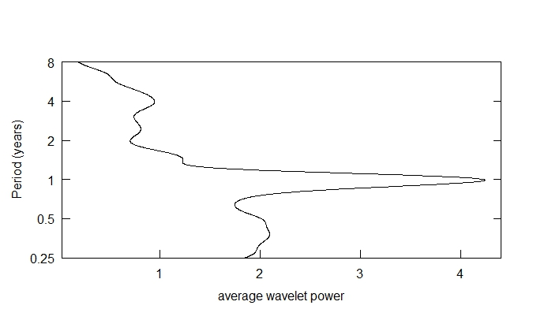<br><span style='font-size:11px; color:#666;'>Source: Chauhan (2025), <a href='https://doi.org/10.1080/02626667.2025.2513479' target='_blank'>Hydrological Sciences Journal<\/a><\/span><\/div>","<div class='popup-content'><b>Station:<\/b> ZAWICHOST<br><b>Station number:<\/b> 150210190<br><b>River:<\/b> WISŁA<br><br><br><span style='font-size:11px; color:#666;'>Source: Chauhan (2025), <a href='https://doi.org/10.1080/02626667.2025.2513479' target='_blank'>Hydrological Sciences Journal<\/a><\/span><\/div>","<div class='popup-content'><b>Station:<\/b> SANDOMIERZ<br><b>Station number:<\/b> 150210170<br><b>River:<\/b> WISŁA<br><br><br><span style='font-size:11px; color:#666;'>Source: Chauhan (2025), <a href='https://doi.org/10.1080/02626667.2025.2513479' target='_blank'>Hydrological Sciences Journal<\/a><\/span><\/div>","<div class='popup-content'><b>Station:<\/b> RADOMYŚL<br><b>Station number:<\/b> 150210210<br><b>River:<\/b> SAN<br><br><br><span style='font-size:11px; color:#666;'>Source: Chauhan (2025), <a href='https://doi.org/10.1080/02626667.2025.2513479' target='_blank'>Hydrological Sciences Journal<\/a><\/span><\/div>","<div class='popup-content'><b>Station:<\/b> PIŃCZÓW<br><b>Station number:<\/b> 150200080<br><b>River:<\/b> NIDA<br><br>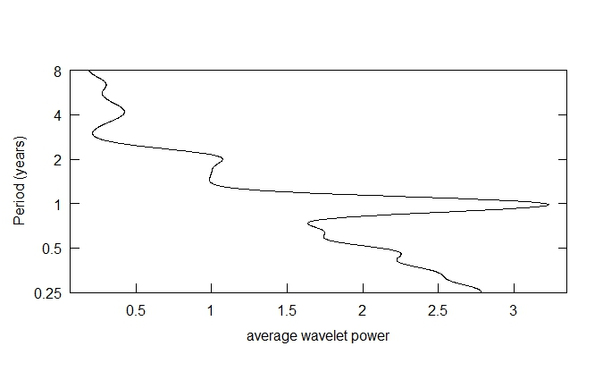<br><span style='font-size:11px; color:#666;'>Source: Chauhan (2025), <a href='https://doi.org/10.1080/02626667.2025.2513479' target='_blank'>Hydrological Sciences Journal<\/a><\/span><\/div>","<div class='popup-content'><b>Station:<\/b> POŁANIEC<br><b>Station number:<\/b> 150210100<br><b>River:<\/b> CZARNA<br><br><br><span style='font-size:11px; color:#666;'>Source: Chauhan (2025), <a href='https://doi.org/10.1080/02626667.2025.2513479' target='_blank'>Hydrological Sciences Journal<\/a><\/span><\/div>","<div class='popup-content'><b>Station:<\/b> SZCZUCIN<br><b>Station number:<\/b> 150210020<br><b>River:<\/b> WISŁA<br><br><br><span style='font-size:11px; color:#666;'>Source: Chauhan (2025), <a href='https://doi.org/10.1080/02626667.2025.2513479' target='_blank'>Hydrological Sciences Journal<\/a><\/span><\/div>","<div class='popup-content'><b>Station:<\/b> BRZEŹNICA<br><b>Station number:<\/b> 150210140<br><b>River:<\/b> WIELOPOLKA<br><br>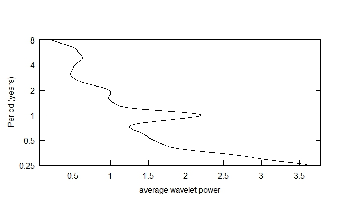<br><span style='font-size:11px; color:#666;'>Source: Chauhan (2025), <a href='https://doi.org/10.1080/02626667.2025.2513479' target='_blank'>Hydrological Sciences Journal<\/a><\/span><\/div>","<div class='popup-content'><b>Station:<\/b> JAROSŁAW<br><b>Station number:<\/b> 150220100<br><b>River:<\/b> SAN<br><br>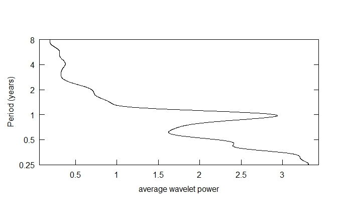<br><span style='font-size:11px; color:#666;'>Source: Chauhan (2025), <a href='https://doi.org/10.1080/02626667.2025.2513479' target='_blank'>Hydrological Sciences Journal<\/a><\/span><\/div>","<div class='popup-content'><b>Station:<\/b> OŚWIĘCIM<br><b>Station number:<\/b> 150190160<br><b>River:<\/b> SOŁA<br><br>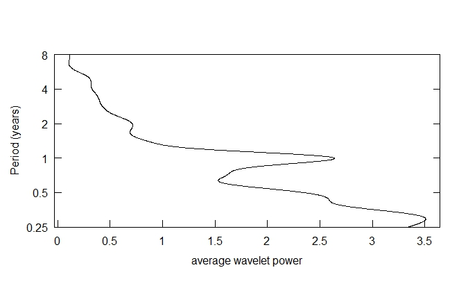<br><span style='font-size:11px; color:#666;'>Source: Chauhan (2025), <a href='https://doi.org/10.1080/02626667.2025.2513479' target='_blank'>Hydrological Sciences Journal<\/a><\/span><\/div>","<div class='popup-content'><b>Station:<\/b> KOSZYCE WIELKIE<br><b>Station number:<\/b> 149200320<br><b>River:<\/b> BIAŁA<br><br>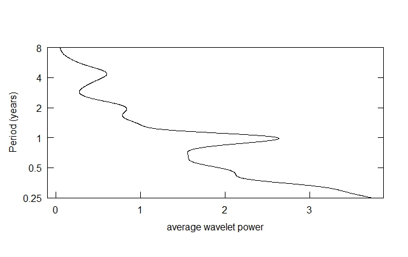<br><span style='font-size:11px; color:#666;'>Source: Chauhan (2025), <a href='https://doi.org/10.1080/02626667.2025.2513479' target='_blank'>Hydrological Sciences Journal<\/a><\/span><\/div>","<div class='popup-content'><b>Station:<\/b> NIENOWICE<br><b>Station number:<\/b> 149220210<br><b>River:<\/b> WISZNIA<br><br>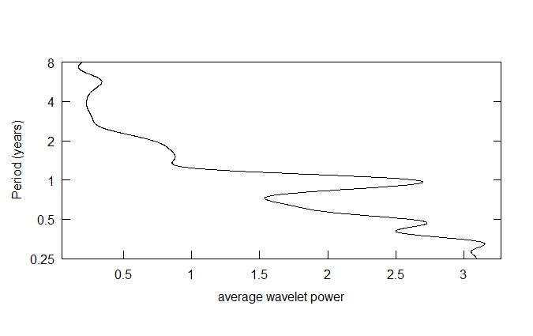<br><span style='font-size:11px; color:#666;'>Source: Chauhan (2025), <a href='https://doi.org/10.1080/02626667.2025.2513479' target='_blank'>Hydrological Sciences Journal<\/a><\/span><\/div>","<div class='popup-content'><b>Station:<\/b> ŻARNOWA<br><b>Station number:<\/b> 149210130<br><b>River:<\/b> WISŁOK<br><br>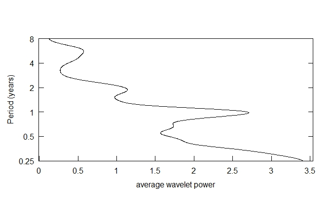<br><span style='font-size:11px; color:#666;'>Source: Chauhan (2025), <a href='https://doi.org/10.1080/02626667.2025.2513479' target='_blank'>Hydrological Sciences Journal<\/a><\/span><\/div>","<div class='popup-content'><b>Station:<\/b> PRZEMYŚL<br><b>Station number:<\/b> 149220190<br><b>River:<\/b> SAN<br><br><br><span style='font-size:11px; color:#666;'>Source: Chauhan (2025), <a href='https://doi.org/10.1080/02626667.2025.2513479' target='_blank'>Hydrological Sciences Journal<\/a><\/span><\/div>","<div class='popup-content'><b>Station:<\/b> KRÓWNIKI<br><b>Station number:<\/b> 149220200<br><b>River:<\/b> WIAR<br><br><br><span style='font-size:11px; color:#666;'>Source: Chauhan (2025), <a href='https://doi.org/10.1080/02626667.2025.2513479' target='_blank'>Hydrological Sciences Journal<\/a><\/span><\/div>","<div class='popup-content'><b>Station:<\/b> ŻÓŁKÓW<br><b>Station number:<\/b> 149210070<br><b>River:<\/b> WISŁOKA<br><br>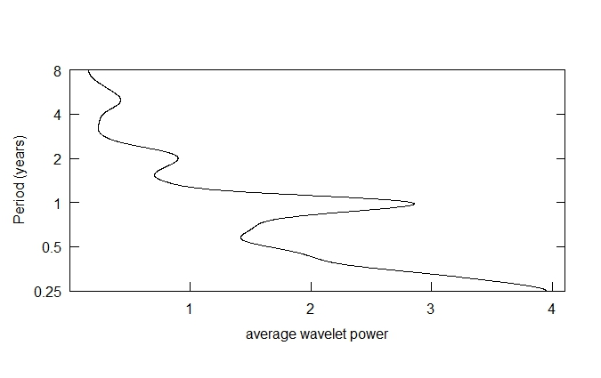<br><span style='font-size:11px; color:#666;'>Source: Chauhan (2025), <a href='https://doi.org/10.1080/02626667.2025.2513479' target='_blank'>Hydrological Sciences Journal<\/a><\/span><\/div>","<div class='popup-content'><b>Station:<\/b> KROSNO<br><b>Station number:<\/b> 149210110<br><b>River:<\/b> WISŁOK<br><br>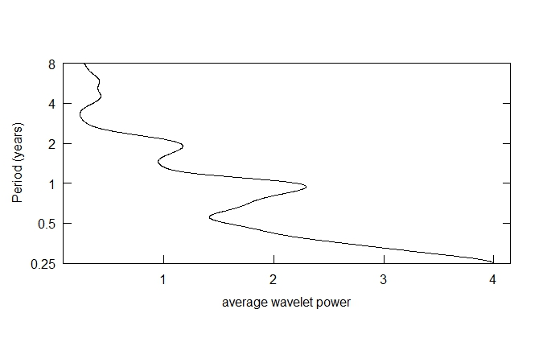<br><span style='font-size:11px; color:#666;'>Source: Chauhan (2025), <a href='https://doi.org/10.1080/02626667.2025.2513479' target='_blank'>Hydrological Sciences Journal<\/a><\/span><\/div>","<div class='popup-content'><b>Station:<\/b> KLĘCZANY<br><b>Station number:<\/b> 149210030<br><b>River:<\/b> ROPA<br><br><br><span style='font-size:11px; color:#666;'>Source: Chauhan (2025), <a href='https://doi.org/10.1080/02626667.2025.2513479' target='_blank'>Hydrological Sciences Journal<\/a><\/span><\/div>","<div class='popup-content'><b>Station:<\/b> NOWY TARG-KOWANIEC<br><b>Station number:<\/b> 149200050<br><b>River:<\/b> DUNAJEC<br><br>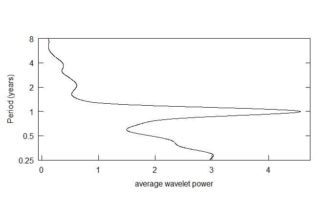<br><span style='font-size:11px; color:#666;'>Source: Chauhan (2025), <a href='https://doi.org/10.1080/02626667.2025.2513479' target='_blank'>Hydrological Sciences Journal<\/a><\/span><\/div>","<div class='popup-content'><b>Station:<\/b> KROŚCIENKO<br><b>Station number:<\/b> 149200160<br><b>River:<\/b> DUNAJEC<br><br><br><span style='font-size:11px; color:#666;'>Source: Chauhan (2025), <a href='https://doi.org/10.1080/02626667.2025.2513479' target='_blank'>Hydrological Sciences Journal<\/a><\/span><\/div>","<div class='popup-content'><b>Station:<\/b> HARASIUKI<br><b>Station number:<\/b> 150220050<br><b>River:<\/b> TANEW<br><br><br><span style='font-size:11px; color:#666;'>Source: Chauhan (2025), <a href='https://doi.org/10.1080/02626667.2025.2513479' target='_blank'>Hydrological Sciences Journal<\/a><\/span><\/div>","<div class='popup-content'><b>Station:<\/b> TRYŃCZA<br><b>Station number:<\/b> 150220080<br><b>River:<\/b> WISŁOK<br><br>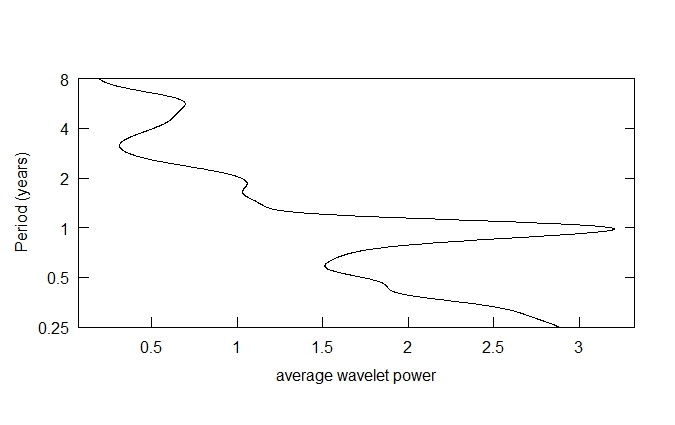<br><span style='font-size:11px; color:#666;'>Source: Chauhan (2025), <a href='https://doi.org/10.1080/02626667.2025.2513479' target='_blank'>Hydrological Sciences Journal<\/a><\/span><\/div>","<div class='popup-content'><b>Station:<\/b> JAGODNIKI<br><b>Station number:<\/b> 150200130<br><b>River:<\/b> WISŁA<br><br>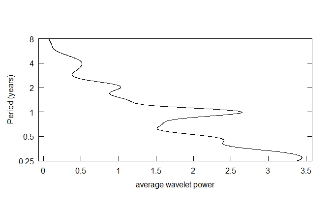<br><span style='font-size:11px; color:#666;'>Source: Chauhan (2025), <a href='https://doi.org/10.1080/02626667.2025.2513479' target='_blank'>Hydrological Sciences Journal<\/a><\/span><\/div>","<div class='popup-content'><b>Station:<\/b> GORLICZYNA<br><b>Station number:<\/b> 150220060<br><b>River:<\/b> MLECZKA<br><br><br><span style='font-size:11px; color:#666;'>Source: Chauhan (2025), <a href='https://doi.org/10.1080/02626667.2025.2513479' target='_blank'>Hydrological Sciences Journal<\/a><\/span><\/div>","<div class='popup-content'><b>Station:<\/b> WADOWICE<br><b>Station number:<\/b> 149190180<br><b>River:<\/b> SKAWA<br><br><br><span style='font-size:11px; color:#666;'>Source: Chauhan (2025), <a href='https://doi.org/10.1080/02626667.2025.2513479' target='_blank'>Hydrological Sciences Journal<\/a><\/span><\/div>","<div class='popup-content'><b>Station:<\/b> SUCHA<br><b>Station number:<\/b> 149190210<br><b>River:<\/b> SKAWA<br><br><br><span style='font-size:11px; color:#666;'>Source: Chauhan (2025), <a href='https://doi.org/10.1080/02626667.2025.2513479' target='_blank'>Hydrological Sciences Journal<\/a><\/span><\/div>","<div class='popup-content'><b>Station:<\/b> NOWY SĄCZ<br><b>Station number:<\/b> 149200240<br><b>River:<\/b> DUNAJEC<br><br>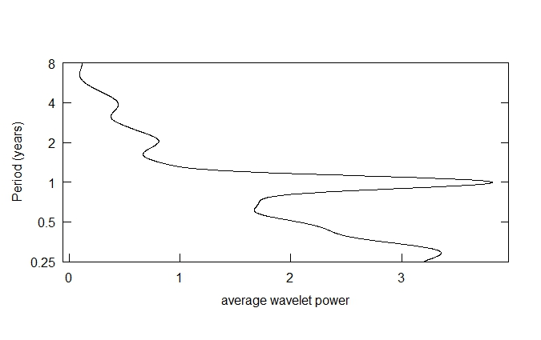<br><span style='font-size:11px; color:#666;'>Source: Chauhan (2025), <a href='https://doi.org/10.1080/02626667.2025.2513479' target='_blank'>Hydrological Sciences Journal<\/a><\/span><\/div>","<div class='popup-content'><b>Station:<\/b> STARY SĄCZ<br><b>Station number:<\/b> 149200220<br><b>River:<\/b> POPRAD<br><br>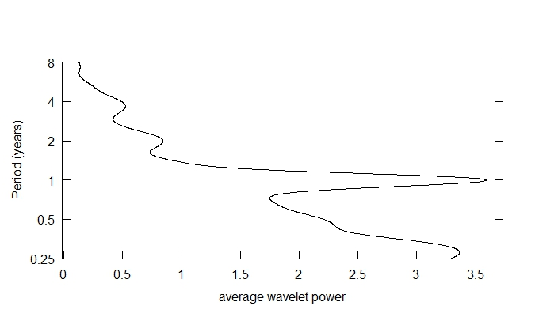<br><span style='font-size:11px; color:#666;'>Source: Chauhan (2025), <a href='https://doi.org/10.1080/02626667.2025.2513479' target='_blank'>Hydrological Sciences Journal<\/a><\/span><\/div>","<div class='popup-content'><b>Station:<\/b> MUSZYNA<br><b>Station number:<\/b> 149200300<br><b>River:<\/b> POPRAD<br><br><br><span style='font-size:11px; color:#666;'>Source: Chauhan (2025), <a href='https://doi.org/10.1080/02626667.2025.2513479' target='_blank'>Hydrological Sciences Journal<\/a><\/span><\/div>","<div class='popup-content'><b>Station:<\/b> BURZYN<br><b>Station number:<\/b> 153220100<br><b>River:<\/b> BIEBRZA<br><br>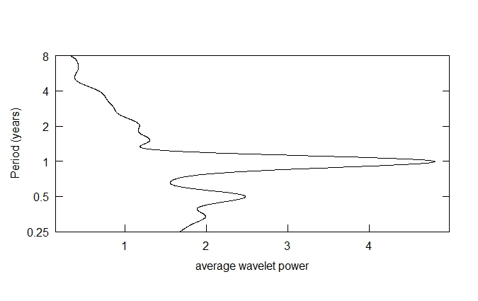<br><span style='font-size:11px; color:#666;'>Source: Chauhan (2025), <a href='https://doi.org/10.1080/02626667.2025.2513479' target='_blank'>Hydrological Sciences Journal<\/a><\/span><\/div>","<div class='popup-content'><b>Station:<\/b> KRUKOWO<br><b>Station number:<\/b> 153210010<br><b>River:<\/b> OMULEW<br><br>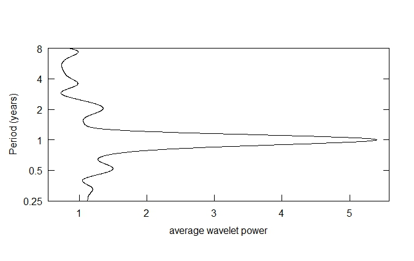<br><span style='font-size:11px; color:#666;'>Source: Chauhan (2025), <a href='https://doi.org/10.1080/02626667.2025.2513479' target='_blank'>Hydrological Sciences Journal<\/a><\/span><\/div>","<div class='popup-content'><b>Station:<\/b> DOBRYLAS<br><b>Station number:<\/b> 153210220<br><b>River:<\/b> PISA<br><br>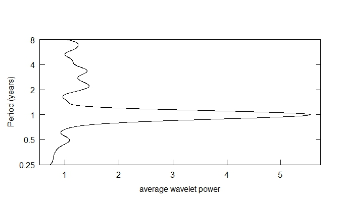<br><span style='font-size:11px; color:#666;'>Source: Chauhan (2025), <a href='https://doi.org/10.1080/02626667.2025.2513479' target='_blank'>Hydrological Sciences Journal<\/a><\/span><\/div>","<div class='popup-content'><b>Station:<\/b> NOWOGRÓD<br><b>Station number:<\/b> 153210210<br><b>River:<\/b> NAREW<br><br><br><span style='font-size:11px; color:#666;'>Source: Chauhan (2025), <a href='https://doi.org/10.1080/02626667.2025.2513479' target='_blank'>Hydrological Sciences Journal<\/a><\/span><\/div>","<div class='popup-content'><b>Station:<\/b> STRĘKOWA GÓRA<br><b>Station number:<\/b> 153220130<br><b>River:<\/b> NAREW<br><br><br><span style='font-size:11px; color:#666;'>Source: Chauhan (2025), <a href='https://doi.org/10.1080/02626667.2025.2513479' target='_blank'>Hydrological Sciences Journal<\/a><\/span><\/div>","<div class='popup-content'><b>Station:<\/b> FASTY<br><b>Station number:<\/b> 153230010<br><b>River:<\/b> SUPRAŚL<br><br>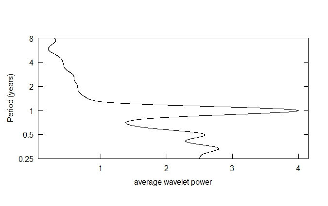<br><span style='font-size:11px; color:#666;'>Source: Chauhan (2025), <a href='https://doi.org/10.1080/02626667.2025.2513479' target='_blank'>Hydrological Sciences Journal<\/a><\/span><\/div>","<div class='popup-content'><b>Station:<\/b> WIZNA<br><b>Station number:<\/b> 153220070<br><b>River:<\/b> NAREW<br><br><br><span style='font-size:11px; color:#666;'>Source: Chauhan (2025), <a href='https://doi.org/10.1080/02626667.2025.2513479' target='_blank'>Hydrological Sciences Journal<\/a><\/span><\/div>","<div class='popup-content'><b>Station:<\/b> OSTROŁĘKA<br><b>Station number:<\/b> 153210090<br><b>River:<\/b> NAREW<br><br>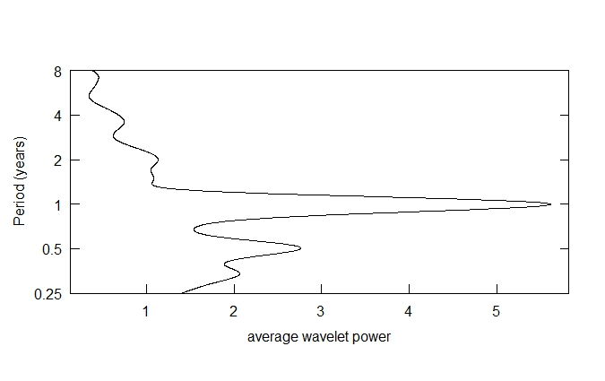<br><span style='font-size:11px; color:#666;'>Source: Chauhan (2025), <a href='https://doi.org/10.1080/02626667.2025.2513479' target='_blank'>Hydrological Sciences Journal<\/a><\/span><\/div>","<div class='popup-content'><b>Station:<\/b> KRASNOSIELC<br><b>Station number:<\/b> 153210020<br><b>River:<\/b> ORZYC<br><br>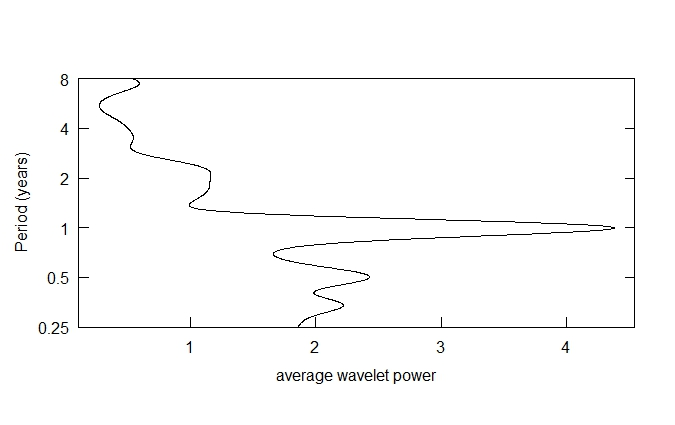<br><span style='font-size:11px; color:#666;'>Source: Chauhan (2025), <a href='https://doi.org/10.1080/02626667.2025.2513479' target='_blank'>Hydrological Sciences Journal<\/a><\/span><\/div>","<div class='popup-content'><b>Station:<\/b> SURAŻ<br><b>Station number:<\/b> 152220080<br><b>River:<\/b> NAREW<br><br><br><span style='font-size:11px; color:#666;'>Source: Chauhan (2025), <a href='https://doi.org/10.1080/02626667.2025.2513479' target='_blank'>Hydrological Sciences Journal<\/a><\/span><\/div>","<div class='popup-content'><b>Station:<\/b> NAREW<br><b>Station number:<\/b> 152230090<br><b>River:<\/b> NAREW<br><br><br><span style='font-size:11px; color:#666;'>Source: Chauhan (2025), <a href='https://doi.org/10.1080/02626667.2025.2513479' target='_blank'>Hydrological Sciences Journal<\/a><\/span><\/div>","<div class='popup-content'><b>Station:<\/b> BRAŃSK<br><b>Station number:<\/b> 152220070<br><b>River:<\/b> NURZEC<br><br>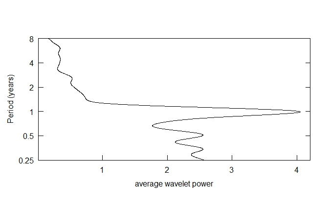<br><span style='font-size:11px; color:#666;'>Source: Chauhan (2025), <a href='https://doi.org/10.1080/02626667.2025.2513479' target='_blank'>Hydrological Sciences Journal<\/a><\/span><\/div>","<div class='popup-content'><b>Station:<\/b> PARZEŃ<br><b>Station number:<\/b> 152190080<br><b>River:<\/b> SKRWA (PRAWA)<br><br><br><span style='font-size:11px; color:#666;'>Source: Chauhan (2025), <a href='https://doi.org/10.1080/02626667.2025.2513479' target='_blank'>Hydrological Sciences Journal<\/a><\/span><\/div>","<div class='popup-content'><b>Station:<\/b> PIWONICE<br><b>Station number:<\/b> 151180020<br><b>River:<\/b> PROSNA<br><br>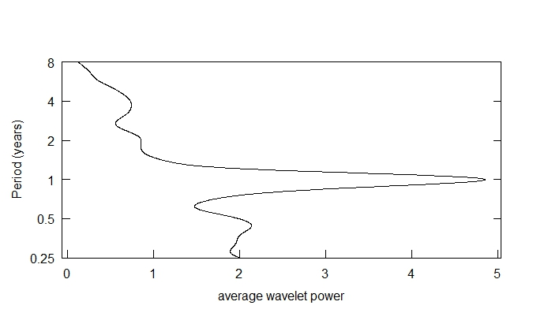<br><span style='font-size:11px; color:#666;'>Source: Chauhan (2025), <a href='https://doi.org/10.1080/02626667.2025.2513479' target='_blank'>Hydrological Sciences Journal<\/a><\/span><\/div>","<div class='popup-content'><b>Station:<\/b> BIAŁOBRZEGI<br><b>Station number:<\/b> 151200120<br><b>River:<\/b> PILICA<br><br>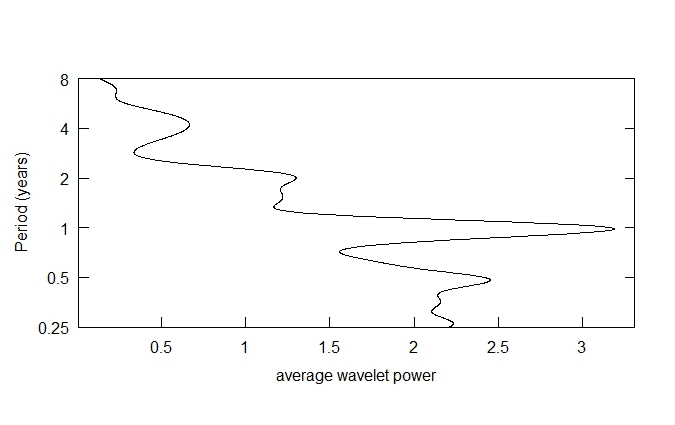<br><span style='font-size:11px; color:#666;'>Source: Chauhan (2025), <a href='https://doi.org/10.1080/02626667.2025.2513479' target='_blank'>Hydrological Sciences Journal<\/a><\/span><\/div>","<div class='popup-content'><b>Station:<\/b> SIERADZ<br><b>Station number:<\/b> 151180080<br><b>River:<\/b> WARTA<br><br><br><span style='font-size:11px; color:#666;'>Source: Chauhan (2025), <a href='https://doi.org/10.1080/02626667.2025.2513479' target='_blank'>Hydrological Sciences Journal<\/a><\/span><\/div>","<div class='popup-content'><b>Station:<\/b> NOWE MIASTO<br><b>Station number:<\/b> 151200090<br><b>River:<\/b> PILICA<br><br>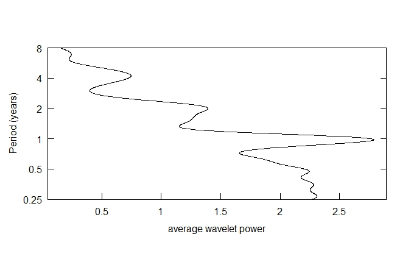<br><span style='font-size:11px; color:#666;'>Source: Chauhan (2025), <a href='https://doi.org/10.1080/02626667.2025.2513479' target='_blank'>Hydrological Sciences Journal<\/a><\/span><\/div>","<div class='popup-content'><b>Station:<\/b> WŁODAWA<br><b>Station number:<\/b> 151230040<br><b>River:<\/b> BUG<br><br><br><span style='font-size:11px; color:#666;'>Source: Chauhan (2025), <a href='https://doi.org/10.1080/02626667.2025.2513479' target='_blank'>Hydrological Sciences Journal<\/a><\/span><\/div>","<div class='popup-content'><b>Station:<\/b> KOŚMIN<br><b>Station number:<\/b> 151220010<br><b>River:<\/b> WIEPRZ<br><br>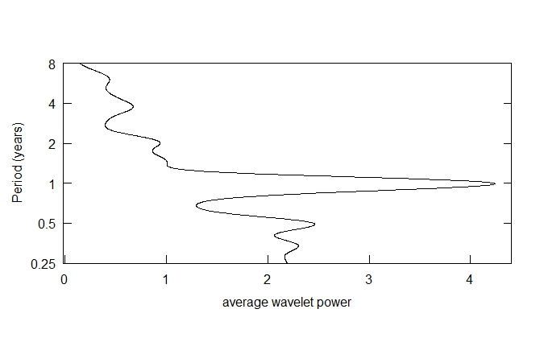<br><span style='font-size:11px; color:#666;'>Source: Chauhan (2025), <a href='https://doi.org/10.1080/02626667.2025.2513479' target='_blank'>Hydrological Sciences Journal<\/a><\/span><\/div>","<div class='popup-content'><b>Station:<\/b> DĘBLIN<br><b>Station number:<\/b> 151210120<br><b>River:<\/b> WISŁA<br><br><br><span style='font-size:11px; color:#666;'>Source: Chauhan (2025), <a href='https://doi.org/10.1080/02626667.2025.2513479' target='_blank'>Hydrological Sciences Journal<\/a><\/span><\/div>","<div class='popup-content'><b>Station:<\/b> ODRZYWÓŁ<br><b>Station number:<\/b> 151200080<br><b>River:<\/b> DRZEWICZKA<br><br>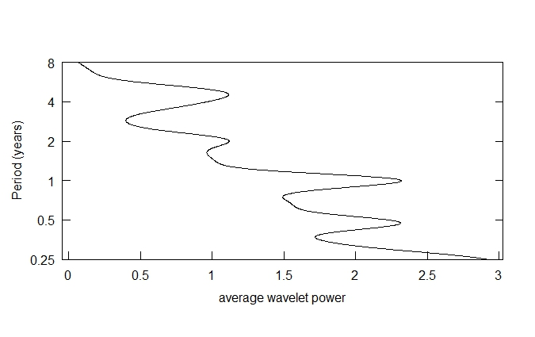<br><span style='font-size:11px; color:#666;'>Source: Chauhan (2025), <a href='https://doi.org/10.1080/02626667.2025.2513479' target='_blank'>Hydrological Sciences Journal<\/a><\/span><\/div>","<div class='popup-content'><b>Station:<\/b> ZAWADA<br><b>Station number:<\/b> 151190110<br><b>River:<\/b> WOLBÓRKA<br><br><br><span style='font-size:11px; color:#666;'>Source: Chauhan (2025), <a href='https://doi.org/10.1080/02626667.2025.2513479' target='_blank'>Hydrological Sciences Journal<\/a><\/span><\/div>","<div class='popup-content'><b>Station:<\/b> OKUNINKA<br><b>Station number:<\/b> 151230030<br><b>River:<\/b> WŁODAWKA<br><br>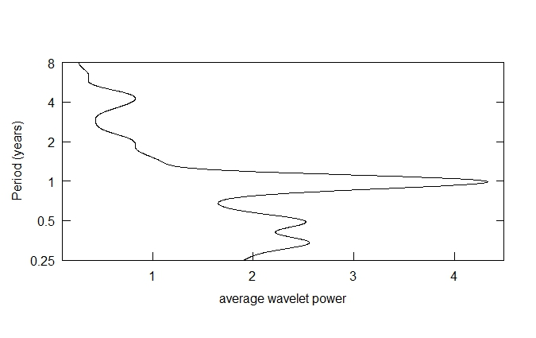<br><span style='font-size:11px; color:#666;'>Source: Chauhan (2025), <a href='https://doi.org/10.1080/02626667.2025.2513479' target='_blank'>Hydrological Sciences Journal<\/a><\/span><\/div>","<div class='popup-content'><b>Station:<\/b> LUBARTÓW<br><b>Station number:<\/b> 151220090<br><b>River:<\/b> WIEPRZ<br><br>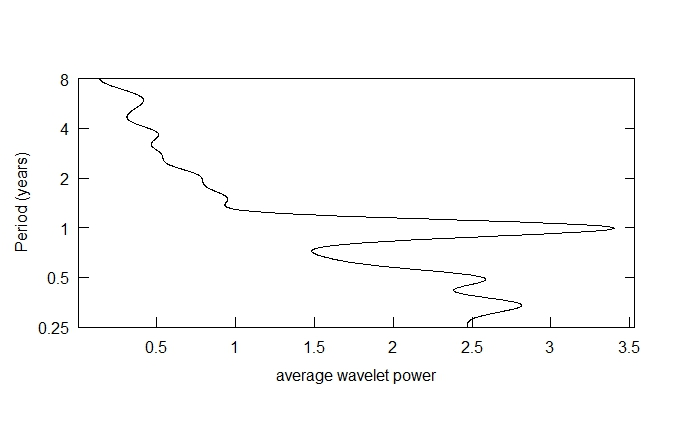<br><span style='font-size:11px; color:#666;'>Source: Chauhan (2025), <a href='https://doi.org/10.1080/02626667.2025.2513479' target='_blank'>Hydrological Sciences Journal<\/a><\/span><\/div>","<div class='popup-content'><b>Station:<\/b> PODGÓRZE<br><b>Station number:<\/b> 151180140<br><b>River:<\/b> WIDAWKA<br><br>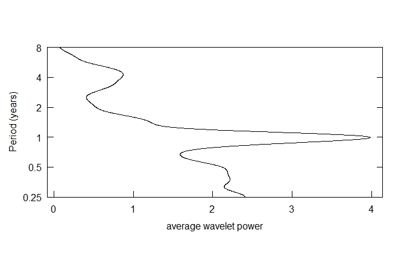<br><span style='font-size:11px; color:#666;'>Source: Chauhan (2025), <a href='https://doi.org/10.1080/02626667.2025.2513479' target='_blank'>Hydrological Sciences Journal<\/a><\/span><\/div>","<div class='popup-content'><b>Station:<\/b> GRABNO<br><b>Station number:<\/b> 151180180<br><b>River:<\/b> GRABIA<br><br><br><span style='font-size:11px; color:#666;'>Source: Chauhan (2025), <a href='https://doi.org/10.1080/02626667.2025.2513479' target='_blank'>Hydrological Sciences Journal<\/a><\/span><\/div>","<div class='popup-content'><b>Station:<\/b> ROGOŹNO<br><b>Station number:<\/b> 151180170<br><b>River:<\/b> WIDAWKA<br><br><br><span style='font-size:11px; color:#666;'>Source: Chauhan (2025), <a href='https://doi.org/10.1080/02626667.2025.2513479' target='_blank'>Hydrological Sciences Journal<\/a><\/span><\/div>","<div class='popup-content'><b>Station:<\/b> NIECHMIRÓW<br><b>Station number:<\/b> 151180090<br><b>River:<\/b> OLEŚNICA<br><br>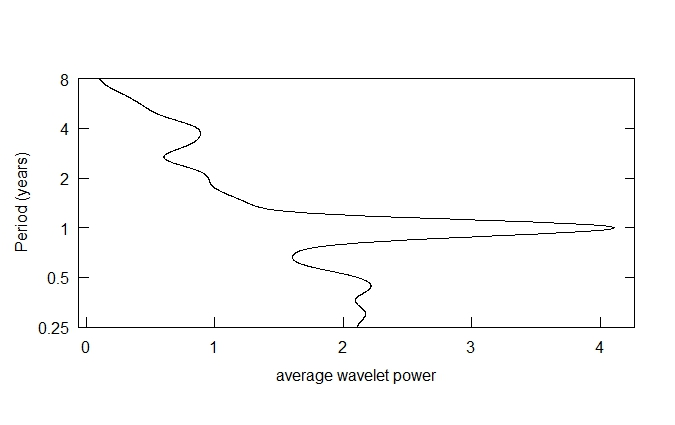<br><span style='font-size:11px; color:#666;'>Source: Chauhan (2025), <a href='https://doi.org/10.1080/02626667.2025.2513479' target='_blank'>Hydrological Sciences Journal<\/a><\/span><\/div>","<div class='popup-content'><b>Station:<\/b> SOBIANOWICE<br><b>Station number:<\/b> 151220100<br><b>River:<\/b> BYSTRZYCA<br><br><br><span style='font-size:11px; color:#666;'>Source: Chauhan (2025), <a href='https://doi.org/10.1080/02626667.2025.2513479' target='_blank'>Hydrological Sciences Journal<\/a><\/span><\/div>","<div class='popup-content'><b>Station:<\/b> KUŹNICA SKAKAWSKA<br><b>Station number:<\/b> 151180030<br><b>River:<\/b> NIESÓB<br><br>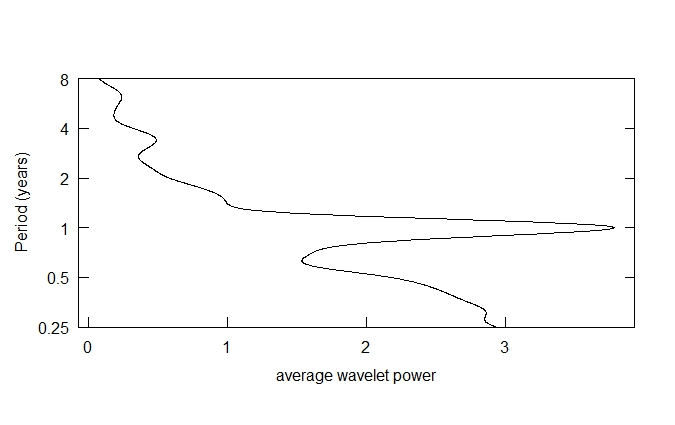<br><span style='font-size:11px; color:#666;'>Source: Chauhan (2025), <a href='https://doi.org/10.1080/02626667.2025.2513479' target='_blank'>Hydrological Sciences Journal<\/a><\/span><\/div>","<div class='popup-content'><b>Station:<\/b> MIRKÓW<br><b>Station number:<\/b> 151180040<br><b>River:<\/b> PROSNA<br><br><br><span style='font-size:11px; color:#666;'>Source: Chauhan (2025), <a href='https://doi.org/10.1080/02626667.2025.2513479' target='_blank'>Hydrological Sciences Journal<\/a><\/span><\/div>","<div class='popup-content'><b>Station:<\/b> PRZEDBÓRZ<br><b>Station number:<\/b> 151190090<br><b>River:<\/b> PILICA<br><br><br><span style='font-size:11px; color:#666;'>Source: Chauhan (2025), <a href='https://doi.org/10.1080/02626667.2025.2513479' target='_blank'>Hydrological Sciences Journal<\/a><\/span><\/div>","<div class='popup-content'><b>Station:<\/b> DZIAŁOSZYN<br><b>Station number:<\/b> 151180130<br><b>River:<\/b> WARTA<br><br>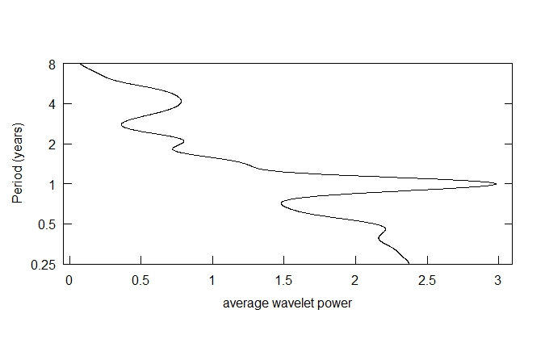<br><span style='font-size:11px; color:#666;'>Source: Chauhan (2025), <a href='https://doi.org/10.1080/02626667.2025.2513479' target='_blank'>Hydrological Sciences Journal<\/a><\/span><\/div>","<div class='popup-content'><b>Station:<\/b> WĄCHOCK<br><b>Station number:<\/b> 151210010<br><b>River:<\/b> KAMIENNA<br><br>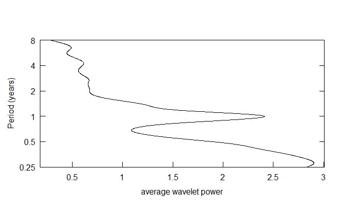<br><span style='font-size:11px; color:#666;'>Source: Chauhan (2025), <a href='https://doi.org/10.1080/02626667.2025.2513479' target='_blank'>Hydrological Sciences Journal<\/a><\/span><\/div>","<div class='popup-content'><b>Station:<\/b> KRASNYSTAW<br><b>Station number:<\/b> 150230040<br><b>River:<\/b> WIEPRZ<br><br>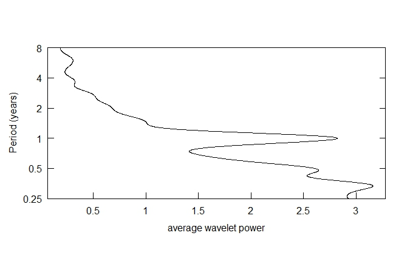<br><span style='font-size:11px; color:#666;'>Source: Chauhan (2025), <a href='https://doi.org/10.1080/02626667.2025.2513479' target='_blank'>Hydrological Sciences Journal<\/a><\/span><\/div>","<div class='popup-content'><b>Station:<\/b> ANNOPOL<br><b>Station number:<\/b> 150210180<br><b>River:<\/b> WISŁA<br><br><br><span style='font-size:11px; color:#666;'>Source: Chauhan (2025), <a href='https://doi.org/10.1080/02626667.2025.2513479' target='_blank'>Hydrological Sciences Journal<\/a><\/span><\/div>","<div class='popup-content'><b>Station:<\/b> SKOROGOSZCZ<br><b>Station number:<\/b> 150170140<br><b>River:<\/b> NYSA KŁODZKA<br><br><br><span style='font-size:11px; color:#666;'>Source: Chauhan (2025), <a href='https://doi.org/10.1080/02626667.2025.2513479' target='_blank'>Hydrological Sciences Journal<\/a><\/span><\/div>","<div class='popup-content'><b>Station:<\/b> STANISZCZE WIELKIE<br><b>Station number:<\/b> 150180100<br><b>River:<\/b> MAŁA PANEW<br><br>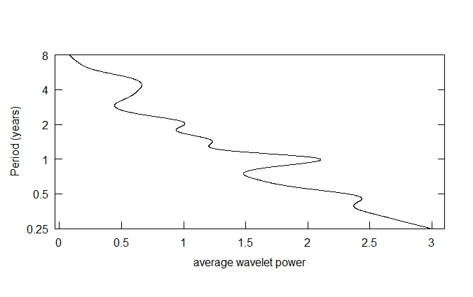<br><span style='font-size:11px; color:#666;'>Source: Chauhan (2025), <a href='https://doi.org/10.1080/02626667.2025.2513479' target='_blank'>Hydrological Sciences Journal<\/a><\/span><\/div>","<div class='popup-content'><b>Station:<\/b> KRUPSKI MŁYN<br><b>Station number:<\/b> 150180190<br><b>River:<\/b> MAŁA PANEW<br><br>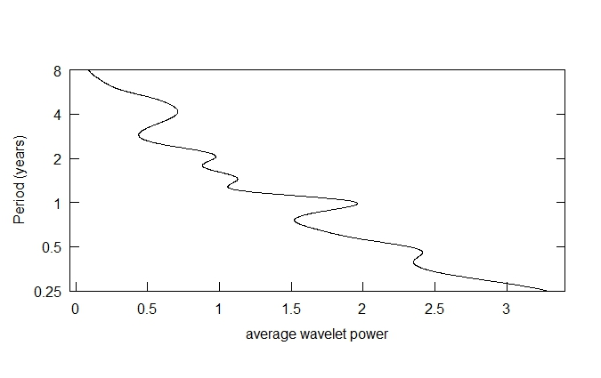<br><span style='font-size:11px; color:#666;'>Source: Chauhan (2025), <a href='https://doi.org/10.1080/02626667.2025.2513479' target='_blank'>Hydrological Sciences Journal<\/a><\/span><\/div>","<div class='popup-content'><b>Station:<\/b> BRYNICA<br><b>Station number:<\/b> 150190010<br><b>River:<\/b> BRYNICA<br><br><br><span style='font-size:11px; color:#666;'>Source: Chauhan (2025), <a href='https://doi.org/10.1080/02626667.2025.2513479' target='_blank'>Hydrological Sciences Journal<\/a><\/span><\/div>","<div class='popup-content'><b>Station:<\/b> PIWOŃ<br><b>Station number:<\/b> 150190190<br><b>River:<\/b> CZARNA PRZEMSZA<br><br>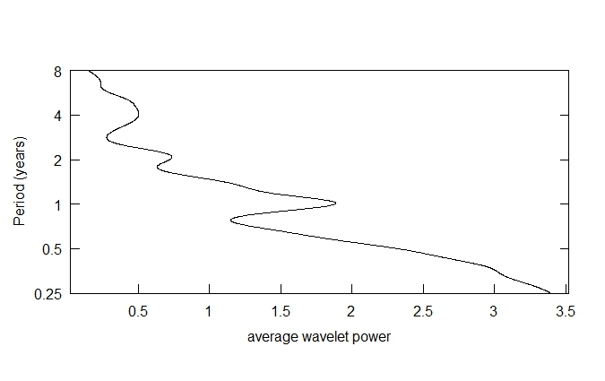<br><span style='font-size:11px; color:#666;'>Source: Chauhan (2025), <a href='https://doi.org/10.1080/02626667.2025.2513479' target='_blank'>Hydrological Sciences Journal<\/a><\/span><\/div>","<div class='popup-content'><b>Station:<\/b> DOBRA<br><b>Station number:<\/b> 150170220<br><b>River:<\/b> BIAŁA<br><br><br><span style='font-size:11px; color:#666;'>Source: Chauhan (2025), <a href='https://doi.org/10.1080/02626667.2025.2513479' target='_blank'>Hydrological Sciences Journal<\/a><\/span><\/div>","<div class='popup-content'><b>Station:<\/b> PRZECZYCE<br><b>Station number:<\/b> 150190120<br><b>River:<\/b> CZARNA PRZEMSZA<br><br>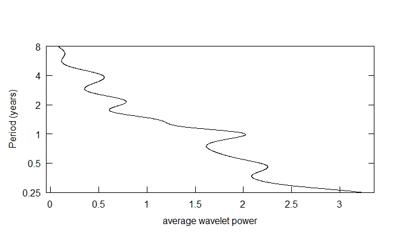<br><span style='font-size:11px; color:#666;'>Source: Chauhan (2025), <a href='https://doi.org/10.1080/02626667.2025.2513479' target='_blank'>Hydrological Sciences Journal<\/a><\/span><\/div>","<div class='popup-content'><b>Station:<\/b> SŁAWKÓW<br><b>Station number:<\/b> 150190250<br><b>River:<\/b> BIAŁA PRZEMSZA<br><br>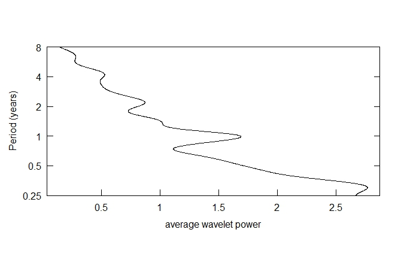<br><span style='font-size:11px; color:#666;'>Source: Chauhan (2025), <a href='https://doi.org/10.1080/02626667.2025.2513479' target='_blank'>Hydrological Sciences Journal<\/a><\/span><\/div>","<div class='popup-content'><b>Station:<\/b> RADOCHA<br><b>Station number:<\/b> 150190080<br><b>River:<\/b> CZARNA PRZEMSZA<br><br><br><span style='font-size:11px; color:#666;'>Source: Chauhan (2025), <a href='https://doi.org/10.1080/02626667.2025.2513479' target='_blank'>Hydrological Sciences Journal<\/a><\/span><\/div>","<div class='popup-content'><b>Station:<\/b> GŁUCHOŁAZY<br><b>Station number:<\/b> 150170070<br><b>River:<\/b> BIAŁA GŁUCHOŁASKA<br><br><br><span style='font-size:11px; color:#666;'>Source: Chauhan (2025), <a href='https://doi.org/10.1080/02626667.2025.2513479' target='_blank'>Hydrological Sciences Journal<\/a><\/span><\/div>","<div class='popup-content'><b>Station:<\/b> GLIWICE<br><b>Station number:<\/b> 150180220<br><b>River:<\/b> KŁODNICA<br><br>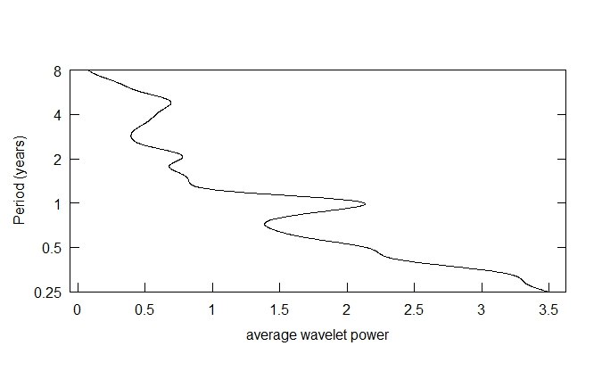<br><span style='font-size:11px; color:#666;'>Source: Chauhan (2025), <a href='https://doi.org/10.1080/02626667.2025.2513479' target='_blank'>Hydrological Sciences Journal<\/a><\/span><\/div>","<div class='popup-content'><b>Station:<\/b> SZABELNIA<br><b>Station number:<\/b> 150190070<br><b>River:<\/b> BRYNICA<br><br><br><span style='font-size:11px; color:#666;'>Source: Chauhan (2025), <a href='https://doi.org/10.1080/02626667.2025.2513479' target='_blank'>Hydrological Sciences Journal<\/a><\/span><\/div>","<div class='popup-content'><b>Station:<\/b> NIWKA<br><b>Station number:<\/b> 150190100<br><b>River:<\/b> BIAŁA PRZEMSZA<br><br>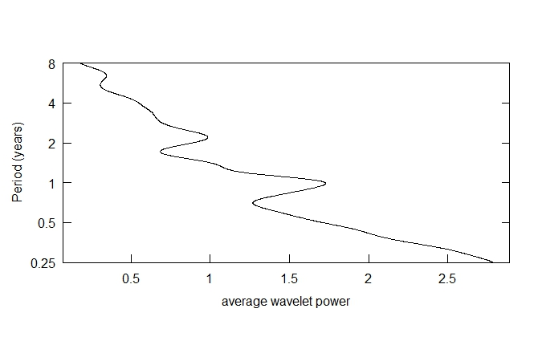<br><span style='font-size:11px; color:#666;'>Source: Chauhan (2025), <a href='https://doi.org/10.1080/02626667.2025.2513479' target='_blank'>Hydrological Sciences Journal<\/a><\/span><\/div>","<div class='popup-content'><b>Station:<\/b> JELEŃ<br><b>Station number:<\/b> 150190180<br><b>River:<\/b> PRZEMSZA<br><br><br><span style='font-size:11px; color:#666;'>Source: Chauhan (2025), <a href='https://doi.org/10.1080/02626667.2025.2513479' target='_blank'>Hydrological Sciences Journal<\/a><\/span><\/div>","<div class='popup-content'><b>Station:<\/b> NOWY BIERUŃ<br><b>Station number:<\/b> 150190140<br><b>River:<\/b> WISŁA<br><br><br><span style='font-size:11px; color:#666;'>Source: Chauhan (2025), <a href='https://doi.org/10.1080/02626667.2025.2513479' target='_blank'>Hydrological Sciences Journal<\/a><\/span><\/div>","<div class='popup-content'><b>Station:<\/b> JAWISZOWICE<br><b>Station number:<\/b> 149190060<br><b>River:<\/b> WISŁA<br><br><br><span style='font-size:11px; color:#666;'>Source: Chauhan (2025), <a href='https://doi.org/10.1080/02626667.2025.2513479' target='_blank'>Hydrological Sciences Journal<\/a><\/span><\/div>","<div class='popup-content'><b>Station:<\/b> CHAŁUPKI<br><b>Station number:<\/b> 149180020<br><b>River:<\/b> ODRA<br><br>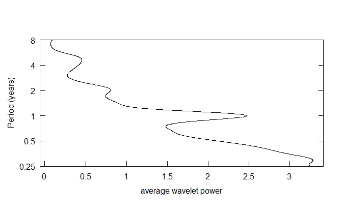<br><span style='font-size:11px; color:#666;'>Source: Chauhan (2025), <a href='https://doi.org/10.1080/02626667.2025.2513479' target='_blank'>Hydrological Sciences Journal<\/a><\/span><\/div>","<div class='popup-content'><b>Station:<\/b> WYSZKÓW 1<br><b>Station number:<\/b> 152210090<br><b>River:<\/b> BUG<br><br>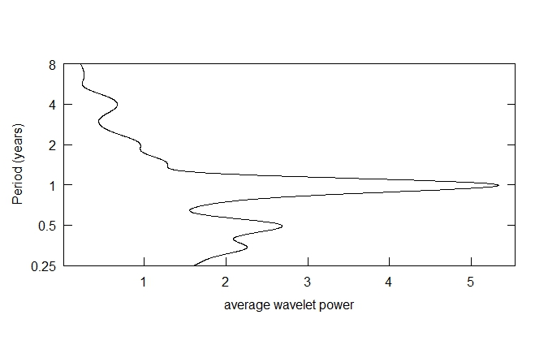<br><span style='font-size:11px; color:#666;'>Source: Chauhan (2025), <a href='https://doi.org/10.1080/02626667.2025.2513479' target='_blank'>Hydrological Sciences Journal<\/a><\/span><\/div>","<div class='popup-content'><b>Station:<\/b> ŁOCHÓW<br><b>Station number:<\/b> 152210120<br><b>River:<\/b> LIWIEC<br><br>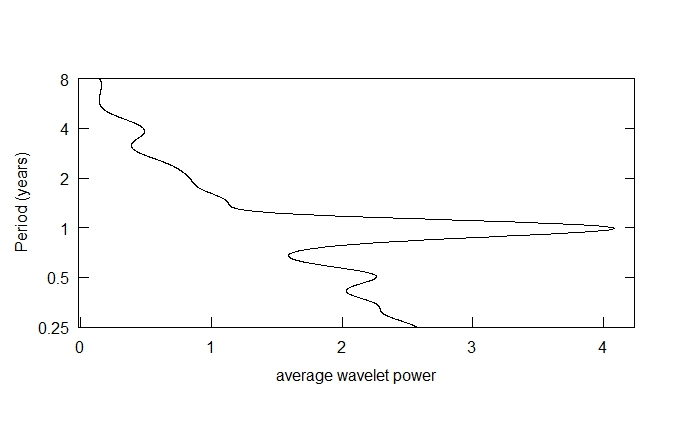<br><span style='font-size:11px; color:#666;'>Source: Chauhan (2025), <a href='https://doi.org/10.1080/02626667.2025.2513479' target='_blank'>Hydrological Sciences Journal<\/a><\/span><\/div>","<div class='popup-content'><b>Station:<\/b> FRANKOPOL<br><b>Station number:<\/b> 152220050<br><b>River:<\/b> BUG<br><br>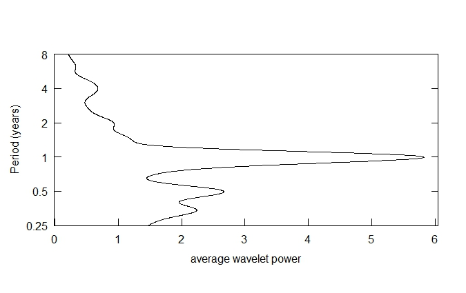<br><span style='font-size:11px; color:#666;'>Source: Chauhan (2025), <a href='https://doi.org/10.1080/02626667.2025.2513479' target='_blank'>Hydrological Sciences Journal<\/a><\/span><\/div>","<div class='popup-content'><b>Station:<\/b> MALOWA GÓRA<br><b>Station number:<\/b> 152230070<br><b>River:<\/b> KRZNA<br><br><br><span style='font-size:11px; color:#666;'>Source: Chauhan (2025), <a href='https://doi.org/10.1080/02626667.2025.2513479' target='_blank'>Hydrological Sciences Journal<\/a><\/span><\/div>","<div class='popup-content'><b>Station:<\/b> GOCZAŁKOWICE<br><b>Station number:<\/b> 149180240<br><b>River:<\/b> WISŁA<br><br><br><span style='font-size:11px; color:#666;'>Source: Chauhan (2025), <a href='https://doi.org/10.1080/02626667.2025.2513479' target='_blank'>Hydrological Sciences Journal<\/a><\/span><\/div>","<div class='popup-content'><b>Station:<\/b> CZECHOWICE-DZIEDZICE<br><b>Station number:<\/b> 149180250<br><b>River:<\/b> IŁOWNICA<br><br><br><span style='font-size:11px; color:#666;'>Source: Chauhan (2025), <a href='https://doi.org/10.1080/02626667.2025.2513479' target='_blank'>Hydrological Sciences Journal<\/a><\/span><\/div>","<div class='popup-content'><b>Station:<\/b> TCZEW<br><b>Station number:<\/b> 154180150<br><b>River:<\/b> WISŁA<br><br><br><span style='font-size:11px; color:#666;'>Source: Chauhan (2025), <a href='https://doi.org/10.1080/02626667.2025.2513479' target='_blank'>Hydrological Sciences Journal<\/a><\/span><\/div>","<div class='popup-content'><b>Station:<\/b> NOWE MIASTO<br><b>Station number:<\/b> 153190090<br><b>River:<\/b> DRWĘCA<br><br><br><span style='font-size:11px; color:#666;'>Source: Chauhan (2025), <a href='https://doi.org/10.1080/02626667.2025.2513479' target='_blank'>Hydrological Sciences Journal<\/a><\/span><\/div>","<div class='popup-content'><b>Station:<\/b> KULIGI<br><b>Station number:<\/b> 153190130<br><b>River:<\/b> WEL<br><br><br><span style='font-size:11px; color:#666;'>Source: Chauhan (2025), <a href='https://doi.org/10.1080/02626667.2025.2513479' target='_blank'>Hydrological Sciences Journal<\/a><\/span><\/div>","<div class='popup-content'><b>Station:<\/b> CZARNA WODA<br><b>Station number:<\/b> 153180010<br><b>River:<\/b> WDA<br><br><br><span style='font-size:11px; color:#666;'>Source: Chauhan (2025), <a href='https://doi.org/10.1080/02626667.2025.2513479' target='_blank'>Hydrological Sciences Journal<\/a><\/span><\/div>","<div class='popup-content'><b>Station:<\/b> BRODY POMORSKIE<br><b>Station number:<\/b> 153180110<br><b>River:<\/b> WIERZYCA<br><br><br><span style='font-size:11px; color:#666;'>Source: Chauhan (2025), <a href='https://doi.org/10.1080/02626667.2025.2513479' target='_blank'>Hydrological Sciences Journal<\/a><\/span><\/div>","<div class='popup-content'><b>Station:<\/b> ZWIERZYNIEC<br><b>Station number:<\/b> 150220170<br><b>River:<\/b> WIEPRZ<br><br><br><span style='font-size:11px; color:#666;'>Source: Chauhan (2025), <a href='https://doi.org/10.1080/02626667.2025.2513479' target='_blank'>Hydrological Sciences Journal<\/a><\/span><\/div>","<div class='popup-content'><b>Station:<\/b> POZNAŃ (MOST ROCHA)<br><b>Station number:<\/b> 152160140<br><b>River:<\/b> WARTA<br><br><br><span style='font-size:11px; color:#666;'>Source: Chauhan (2025), <a href='https://doi.org/10.1080/02626667.2025.2513479' target='_blank'>Hydrological Sciences Journal<\/a><\/span><\/div>","<div class='popup-content'><b>Station:<\/b> GORZÓW WIELKOPOLSKI<br><b>Station number:<\/b> 152150040<br><b>River:<\/b> WARTA<br><br><br><span style='font-size:11px; color:#666;'>Source: Chauhan (2025), <a href='https://doi.org/10.1080/02626667.2025.2513479' target='_blank'>Hydrological Sciences Journal<\/a><\/span><\/div>","<div class='popup-content'><b>Station:<\/b> BOGUSŁAW<br><b>Station number:<\/b> 151170110<br><b>River:<\/b> PROSNA<br><br><br><span style='font-size:11px; color:#666;'>Source: Chauhan (2025), <a href='https://doi.org/10.1080/02626667.2025.2513479' target='_blank'>Hydrological Sciences Journal<\/a><\/span><\/div>","<div class='popup-content'><b>Station:<\/b> KONOJAD<br><b>Station number:<\/b> 152160060<br><b>River:<\/b> MOGILNICA<br><br><br><span style='font-size:11px; color:#666;'>Source: Chauhan (2025), <a href='https://doi.org/10.1080/02626667.2025.2513479' target='_blank'>Hydrological Sciences Journal<\/a><\/span><\/div>","<div class='popup-content'><b>Station:<\/b> PRUŚCE<br><b>Station number:<\/b> 152170040<br><b>River:<\/b> WEŁNA<br><br><br><span style='font-size:11px; color:#666;'>Source: Chauhan (2025), <a href='https://doi.org/10.1080/02626667.2025.2513479' target='_blank'>Hydrological Sciences Journal<\/a><\/span><\/div>","<div class='popup-content'><b>Station:<\/b> SZAMOTUŁY<br><b>Station number:<\/b> 152160080<br><b>River:<\/b> SAMA<br><br><br><span style='font-size:11px; color:#666;'>Source: Chauhan (2025), <a href='https://doi.org/10.1080/02626667.2025.2513479' target='_blank'>Hydrological Sciences Journal<\/a><\/span><\/div>","<div class='popup-content'><b>Station:<\/b> NOWE DREZDENKO<br><b>Station number:<\/b> 152150190<br><b>River:<\/b> NOTEĆ<br><br><br><span style='font-size:11px; color:#666;'>Source: Chauhan (2025), <a href='https://doi.org/10.1080/02626667.2025.2513479' target='_blank'>Hydrological Sciences Journal<\/a><\/span><\/div>","<div class='popup-content'><b>Station:<\/b> PIŁA<br><b>Station number:<\/b> 153160180<br><b>River:<\/b> GWDA<br><br><br><span style='font-size:11px; color:#666;'>Source: Chauhan (2025), <a href='https://doi.org/10.1080/02626667.2025.2513479' target='_blank'>Hydrological Sciences Journal<\/a><\/span><\/div>","<div class='popup-content'><b>Station:<\/b> ODOLANÓW<br><b>Station number:<\/b> 151170070<br><b>River:<\/b> BARYCZ<br><br><br><span style='font-size:11px; color:#666;'>Source: Chauhan (2025), <a href='https://doi.org/10.1080/02626667.2025.2513479' target='_blank'>Hydrological Sciences Journal<\/a><\/span><\/div>","<div class='popup-content'><b>Station:<\/b> OSETNO<br><b>Station number:<\/b> 151160140<br><b>River:<\/b> BARYCZ<br><br><br><span style='font-size:11px; color:#666;'>Source: Chauhan (2025), <a href='https://doi.org/10.1080/02626667.2025.2513479' target='_blank'>Hydrological Sciences Journal<\/a><\/span><\/div>","<div class='popup-content'><b>Station:<\/b> ŻAGAŃ<br><b>Station number:<\/b> 151150080<br><b>River:<\/b> BÓBR<br><br><br><span style='font-size:11px; color:#666;'>Source: Chauhan (2025), <a href='https://doi.org/10.1080/02626667.2025.2513479' target='_blank'>Hydrological Sciences Journal<\/a><\/span><\/div>","<div class='popup-content'><b>Station:<\/b> ŻAGAŃ<br><b>Station number:<\/b> 151150070<br><b>River:<\/b> CZERNA WIELKA<br><br><br><span style='font-size:11px; color:#666;'>Source: Chauhan (2025), <a href='https://doi.org/10.1080/02626667.2025.2513479' target='_blank'>Hydrological Sciences Journal<\/a><\/span><\/div>","<div class='popup-content'><b>Station:<\/b> TRZEBIATÓW<br><b>Station number:<\/b> 154150010<br><b>River:<\/b> REGA<br><br><br><span style='font-size:11px; color:#666;'>Source: Chauhan (2025), <a href='https://doi.org/10.1080/02626667.2025.2513479' target='_blank'>Hydrological Sciences Journal<\/a><\/span><\/div>","<div class='popup-content'><b>Station:<\/b> TYCHÓWKO<br><b>Station number:<\/b> 153160020<br><b>River:<\/b> PARSĘTA<br><br><br><span style='font-size:11px; color:#666;'>Source: Chauhan (2025), <a href='https://doi.org/10.1080/02626667.2025.2513479' target='_blank'>Hydrological Sciences Journal<\/a><\/span><\/div>","<div class='popup-content'><b>Station:<\/b> STARY KRAKÓW<br><b>Station number:<\/b> 154160070<br><b>River:<\/b> WIEPRZA<br><br><br><span style='font-size:11px; color:#666;'>Source: Chauhan (2025), <a href='https://doi.org/10.1080/02626667.2025.2513479' target='_blank'>Hydrological Sciences Journal<\/a><\/span><\/div>","<div class='popup-content'><b>Station:<\/b> SŁUPSK<br><b>Station number:<\/b> 154170010<br><b>River:<\/b> SŁUPIA<br><br><br><span style='font-size:11px; color:#666;'>Source: Chauhan (2025), <a href='https://doi.org/10.1080/02626667.2025.2513479' target='_blank'>Hydrological Sciences Journal<\/a><\/span><\/div>","<div class='popup-content'><b>Station:<\/b> SMOŁDZINO<br><b>Station number:<\/b> 154170060<br><b>River:<\/b> ŁUPAWA<br><br><br><span style='font-size:11px; color:#666;'>Source: Chauhan (2025), <a href='https://doi.org/10.1080/02626667.2025.2513479' target='_blank'>Hydrological Sciences Journal<\/a><\/span><\/div>","<div class='popup-content'><b>Station:<\/b> TUCHOLA<br><b>Station number:<\/b> 153170120<br><b>River:<\/b> BRDA<br><br><br><span style='font-size:11px; color:#666;'>Source: Chauhan (2025), <a href='https://doi.org/10.1080/02626667.2025.2513479' target='_blank'>Hydrological Sciences Journal<\/a><\/span><\/div>","<div class='popup-content'><b>Station:<\/b> BYSTRZYCA KŁODZKA<br><b>Station number:<\/b> 150160170<br><b>River:<\/b> NYSA KŁODZKA<br><br><br><span style='font-size:11px; color:#666;'>Source: Chauhan (2025), <a href='https://doi.org/10.1080/02626667.2025.2513479' target='_blank'>Hydrological Sciences Journal<\/a><\/span><\/div>","<div class='popup-content'><b>Station:<\/b> KŁODZKO<br><b>Station number:<\/b> 150160180<br><b>River:<\/b> NYSA KŁODZKA<br><br><br><span style='font-size:11px; color:#666;'>Source: Chauhan (2025), <a href='https://doi.org/10.1080/02626667.2025.2513479' target='_blank'>Hydrological Sciences Journal<\/a><\/span><\/div>","<div class='popup-content'><b>Station:<\/b> NYSA<br><b>Station number:<\/b> 150170060<br><b>River:<\/b> NYSA KŁODZKA<br><br><br><span style='font-size:11px; color:#666;'>Source: Chauhan (2025), <a href='https://doi.org/10.1080/02626667.2025.2513479' target='_blank'>Hydrological Sciences Journal<\/a><\/span><\/div>","<div class='popup-content'><b>Station:<\/b> SZALEJÓW DOLNY<br><b>Station number:<\/b> 150160110<br><b>River:<\/b> BYSTRZYCA DUSZNICKA<br><br><br><span style='font-size:11px; color:#666;'>Source: Chauhan (2025), <a href='https://doi.org/10.1080/02626667.2025.2513479' target='_blank'>Hydrological Sciences Journal<\/a><\/span><\/div>","<div class='popup-content'><b>Station:<\/b> TŁUMACZÓW<br><b>Station number:<\/b> 150160080<br><b>River:<\/b> ŚCINAWKA<br><br><br><span style='font-size:11px; color:#666;'>Source: Chauhan (2025), <a href='https://doi.org/10.1080/02626667.2025.2513479' target='_blank'>Hydrological Sciences Journal<\/a><\/span><\/div>","<div class='popup-content'><b>Station:<\/b> GORZUCHÓW<br><b>Station number:<\/b> 150160100<br><b>River:<\/b> ŚCINAWKA<br><br><br><span style='font-size:11px; color:#666;'>Source: Chauhan (2025), <a href='https://doi.org/10.1080/02626667.2025.2513479' target='_blank'>Hydrological Sciences Journal<\/a><\/span><\/div>","<div class='popup-content'><b>Station:<\/b> OŁAWA<br><b>Station number:<\/b> 150170030<br><b>River:<\/b> OŁAWA<br><br><br><span style='font-size:11px; color:#666;'>Source: Chauhan (2025), <a href='https://doi.org/10.1080/02626667.2025.2513479' target='_blank'>Hydrological Sciences Journal<\/a><\/span><\/div>","<div class='popup-content'><b>Station:<\/b> KRASKÓW<br><b>Station number:<\/b> 150160120<br><b>River:<\/b> BYSTRZYCA<br><br><br><span style='font-size:11px; color:#666;'>Source: Chauhan (2025), <a href='https://doi.org/10.1080/02626667.2025.2513479' target='_blank'>Hydrological Sciences Journal<\/a><\/span><\/div>","<div class='popup-content'><b>Station:<\/b> MOŚCISKO<br><b>Station number:<\/b> 150160130<br><b>River:<\/b> PIŁAWA<br><br><br><span style='font-size:11px; color:#666;'>Source: Chauhan (2025), <a href='https://doi.org/10.1080/02626667.2025.2513479' target='_blank'>Hydrological Sciences Journal<\/a><\/span><\/div>","<div class='popup-content'><b>Station:<\/b> ŁAZANY<br><b>Station number:<\/b> 150160090<br><b>River:<\/b> STRZEGOMKA<br><br><br><span style='font-size:11px; color:#666;'>Source: Chauhan (2025), <a href='https://doi.org/10.1080/02626667.2025.2513479' target='_blank'>Hydrological Sciences Journal<\/a><\/span><\/div>","<div class='popup-content'><b>Station:<\/b> BARCINEK<br><b>Station number:<\/b> 150150040<br><b>River:<\/b> KAMIENICA<br><br><br><span style='font-size:11px; color:#666;'>Source: Chauhan (2025), <a href='https://doi.org/10.1080/02626667.2025.2513479' target='_blank'>Hydrological Sciences Journal<\/a><\/span><\/div>","<div class='popup-content'><b>Station:<\/b> NOWOGRODZIEC<br><b>Station number:<\/b> 151150100<br><b>River:<\/b> KWISA<br><br><br><span style='font-size:11px; color:#666;'>Source: Chauhan (2025), <a href='https://doi.org/10.1080/02626667.2025.2513479' target='_blank'>Hydrological Sciences Journal<\/a><\/span><\/div>","<div class='popup-content'><b>Station:<\/b> MIRSK<br><b>Station number:<\/b> 150150010<br><b>River:<\/b> CZARNY POTOK<br><br><br><span style='font-size:11px; color:#666;'>Source: Chauhan (2025), <a href='https://doi.org/10.1080/02626667.2025.2513479' target='_blank'>Hydrological Sciences Journal<\/a><\/span><\/div>","<div class='popup-content'><b>Station:<\/b> DRAWSKO POMORSKIE<br><b>Station number:<\/b> 153150120<br><b>River:<\/b> DRAWA<br><br><br><span style='font-size:11px; color:#666;'>Source: Chauhan (2025), <a href='https://doi.org/10.1080/02626667.2025.2513479' target='_blank'>Hydrological Sciences Journal<\/a><\/span><\/div>"],{"maxWidth":450,"minWidth":350,"autoPan":true,"keepInView":false,"closeButton":true,"className":""},null,{"interactive":false,"permanent":false,"direction":"auto","opacity":1,"offset":[0,0],"textsize":"10px","textOnly":false,"className":"","sticky":true},null]}],"limits":{"lat":[49.33867659291251,54.66234596238143],"lng":[15.24099786312278,23.56642622062891]}},"evals":[],"jsHooks":{"render":[{"code":"function(el, x, data) {\n  return (\n    function(el,x){\n      var css = document.createElement('style');\n      css.innerHTML = `\n        .triangle-down {\n          width: 0;\n          height: 0;\n          border-left: 6px solid transparent;\n          border-right: 6px solid transparent;\n          border-top: 9px solid black;\n          margin-left: -6px;\n          margin-top: -4px;\n        }\n        .popup-content {\n          width: 100%;\n        }\n        .popup-img {\n          width: 100%;\n          height: auto;\n          border: 1px solid #ccc;\n        }\n      `;\n      document.head.appendChild(css);\n    }\n  ).call(this.getMap(), el, x, data);\n}","data":null}]}}</script>
<script type="application/htmlwidget-sizing" data-for="htmlwidget-5a67dbfd1a606472f065">{"viewer":{"width":"100%","height":400,"padding":0,"fill":true},"browser":{"width":"100%","height":400,"padding":0,"fill":true}}</script>
</body>
</html>
